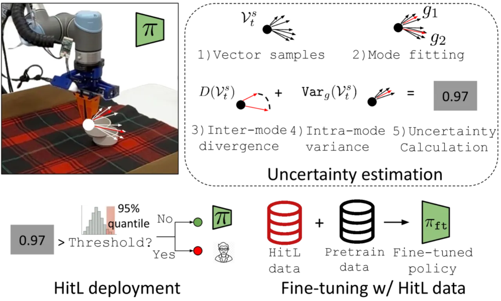
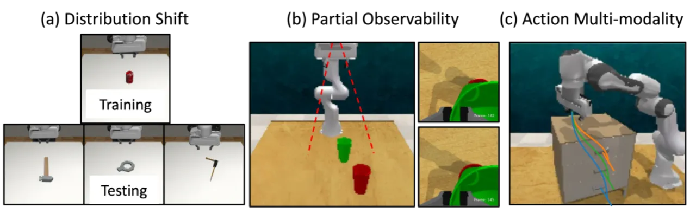
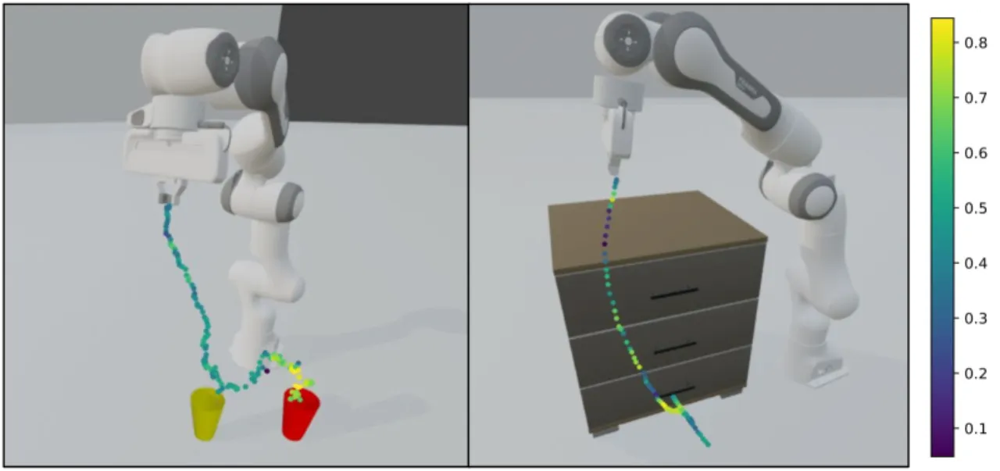
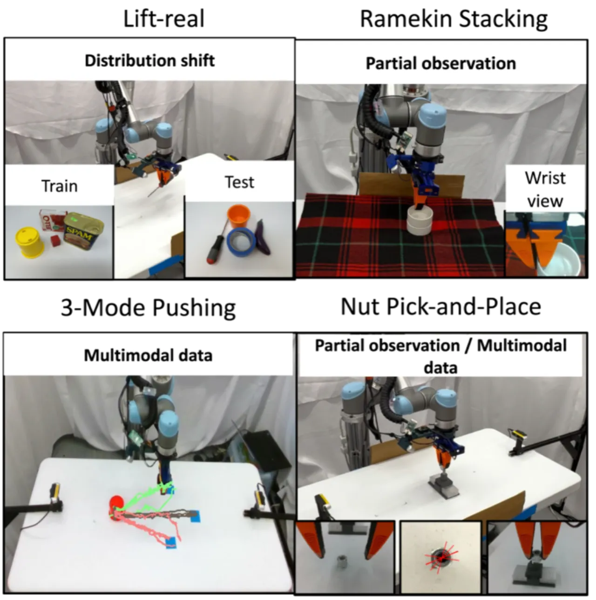
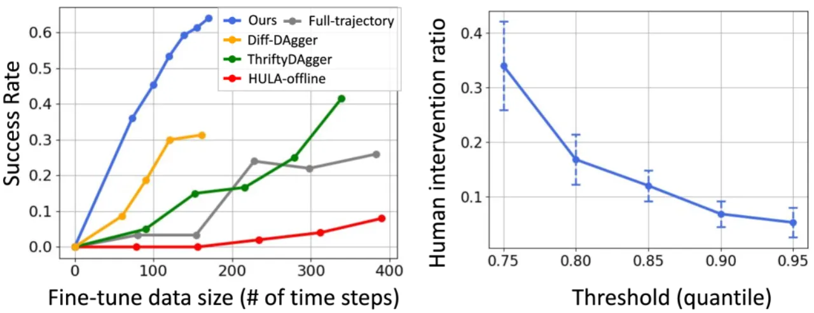
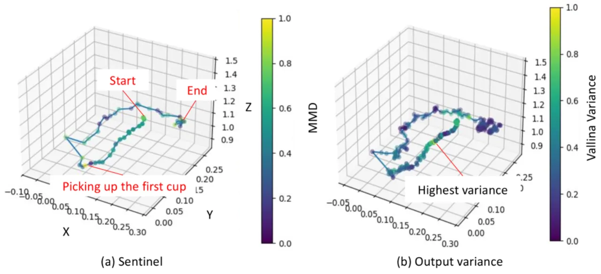

本文提出利用扩散策略（diffusion policy）生成过程中固有的去噪不确定性，免训练地识别机器人何时需要请求人工干预， 从而构建高效的半自主 Human-in-the-Loop（HitL）系统，同时将干预数据用于策略微调以持续改善自主性能。
在实际机器人部署中，人工持续监控代价高昂、难以规模化。现有 HitL 方法要求人工标注干预时机，或训练额外分类器， 成本高且泛化性差。本文发现：扩散模型的去噪过程本身就隐含了丰富的不确定性信号，无需任何额外监督即可驱动智能干预请求。
"We propose using denoising uncertainty as a metric for deciding when to request (human) expert assistance." ——无需在训练时引入人工标注，不确定性信号从扩散策略的生成过程中免费获得。

现有 HitL 机器人策略方法可分为两类：
核心思路：在当前末端执行器位姿附近采样多个探针点，通过扩散策略的噪声预测网络（noise prediction network）得到对应的预测动作分布， 用高斯混合模型（GMM）拟合后计算模间散度与模内方差，合并为统一的不确定性度量。部署时若不确定性超过验证集第 95 百分位阈值，则触发人工干预请求。

在当前末端执行器位姿 xt 周围，以采样半径 r（实验中取 0.05 m）均匀采样 n 个探针位姿 {si}。 对每个探针点，从噪声初始化动作轨迹出发，运行扩散策略的去噪过程（仅推理，无梯度）得到预测动作向量：
其中 εθ 为已训练的噪声预测网络，ot 为当前观测。所有探针点的去噪方向向量构成集合 Vts。
对去噪方向向量集 Vts 拟合高斯混合模型（GMM），每个模代表一种可能的动作意图。不确定性由两部分组成：
其中 α 为缩放系数（实验中取较小值 0.01–0.1，以强调模间散度的贡献）。
阈值取验证集（held-out validation set）不确定性分布的 第 95 百分位数，无需人工调参。 当实时不确定性超过阈值时，机器人暂停自主执行并请求人工远程操控（teleoperation）若干步，随后恢复自主。 干预数据实时收集，用于后续微调。

收集到的人工干预轨迹可直接用于对扩散策略进行微调。实验表明，与收集完整轨迹相比， HitL 干预数据更具针对性，以更少数据量实现更好的性能提升，且不产生灾难性遗忘（catastrophic forgetting）。
实验在模拟环境（三个操控任务，三类挑战场景）和真实机器人（四个任务）上进行。 评估指标：达到 100% 成功率所需的平均人工干预步数（越少越好）；微调后自主成功率。 基线包括：Diff-DAgger、ThriftyDAgger、HULA-offline、Sentinel、Output Variance。
| 任务 | Diff-DAgger | ThriftyDAgger | HULA-offline | Sentinel | 本文方法 |
|---|---|---|---|---|---|
| Lift-sim（分布偏移） | 30.2 ± 1.3 | — | — | — | 16.9 ± 4.5 |
| Cup-stacking（部分可观测） | — | — | 54.0 ± 16.3 | — | 5.4 ± 1.0 |
| Open-drawer（动作多模） | — | 17.2 ± 8.9 | — | — | 8.0 ± 1.9 |
在四个真实操控任务上，本文方法仅需约 8.3% 的时间步进行人工干预，即可实现 100% 任务成功率； 而全轨迹人工操控基线需要 80.0–111.9 个干预步数。本方法在所有场景下均优于 Sentinel 和 Output Variance 基线。

使用 HitL 收集的 80 个数据样本对策略微调后，自主成功率达到 0.63； 而使用完整轨迹微调（132 个样本）仅达到 0.31。平均来看，HitL 微调带来 47% 的成功率提升， 且数据量更少、针对性更强。

采样半径（Table V）：最优半径为 0.05 m，干预步数 20 步，成功率 0.63；
过小（0.01 m）成功率降至 0.46，过大（0.1 m）降至 0.53。
缩放系数 α（Table VI）：α = 0.01–0.1（强调模间散度）时效果最优，
Cup-stacking 微调仅需 5 步干预；α = 0.5 时需 7 步。
阈值选择：95 百分位阈值在多类任务中均能稳定地以较低干预量维持 100% 成功率，无需逐任务调整。

本方法在探针采样时假设动作空间为末端执行器的绝对位姿（absolute end-effector poses）。 对于关节空间控制、速度控制或其他参数化形式的策略，探针采样策略需重新设计，方法的直接适用性受限。
不确定性阈值取验证集的第 95 百分位。若验证集分布与实际部署环境差异过大，阈值可能失准，导致干预过多或过少。 论文中所有实验的验证集均来自与训练分布相近的场景。
论文指出，Case 2（部分可观测性）"is the most difficult, since correct decision making is impossible without changing the available observation"。 即使人工干预也无法解决传感器本身的信息缺失，方法对此类场景的帮助有限。
方法假设人工操作员的干预"effective for task completion"，未对操作员技能水平或干预质量进行建模。 若操作员本身表现不佳，收集到的干预数据可能对微调有负面影响。
真实机器人实验仅在四个相对简单的操控任务上进行，任务复杂度和场景多样性有限。 方法在长时程任务、高自由度机器人或非结构化环境中的泛化性尚未验证。